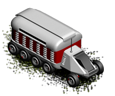

Colonizer
Colonizer's sole purpose is to establish new colonies on Mars.
Building a colonizer from a colony will reduce its population by 100 and
established colonies will have a population of same number. A colony
that has a population less than 100 can not produce a new Colonizer.
Although the colonizer can move on terrain like hills, crater or tundra,
it is advisable to build new settlements on plains since it is the only
terrain type on planet that can grow more food than that is needed by
the number of workers assigned to it.
This unit does not have any armor or armament and can not fight, it will be
destroyed even if an enemy unit with minimum arms attacks it, thus the
valuable colonizer must be protected from enemy units at all costs.

| Movement points |
1 |
| Attack |
0 |
| Defence |
0 |
| Production cost |
4000 |
| Upkeep cost |
150 |
Can move on:
- Plains
- Desert
- Wasteland
- Tundra
- Crater
- Hills